Change analysis for Saudi Arabia for PRIMAP-hist v2.7_final compared
to v2.6.1_final
Overview over
emissions by sector and gas
The following figures show the aggregate national total emissions
excluding LULUCF AR6GWP100 for the country reported priority scenario.
The dotted linesshow the v2.6.1_final data.
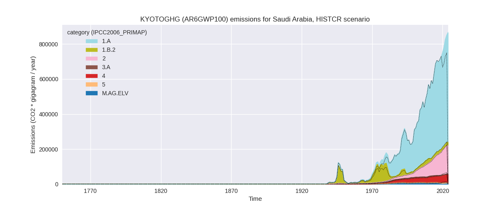
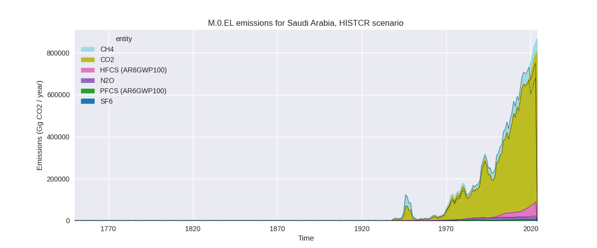
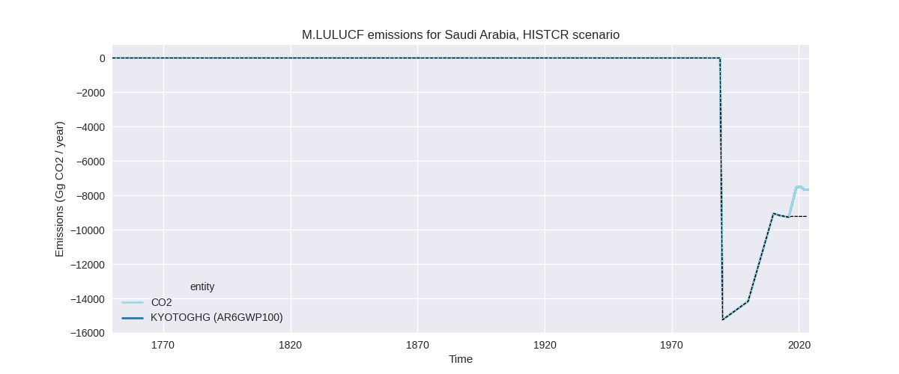
The following figures show the aggregate national total emissions
excluding LULUCF AR6GWP100 for the third party priority scenario. The
dotted linesshow the v2.6.1_final data.
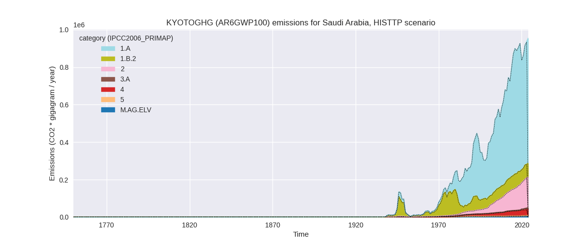
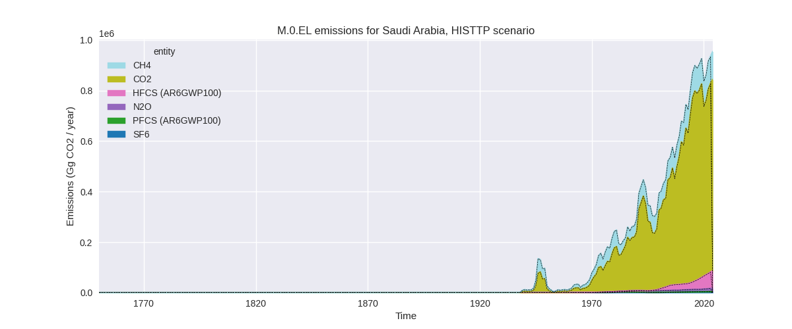
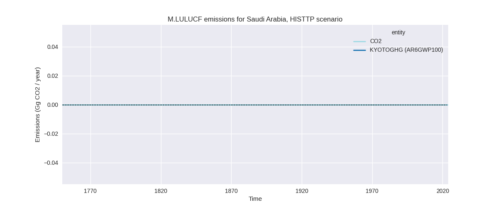
Overview over changes
In the country reported priority scenario we have the following
changes for aggregate Kyoto GHG and national total emissions excluding
LULUCF (M.0.EL):
- Emissions in 2023 have changed by 13.4%% (100299.25 Gg CO2 / year)
- Emissions in 1990-2023 have changed by 2.3%% (10734.56 Gg CO2 / year)
In the third party priority scenario we have the following changes
for aggregate Kyoto GHG and national total emissions excluding LULUCF
(M.0.EL):
- Emissions in 2023 have changed by 0.3%% (2568.03 Gg CO2 / year)
- Emissions in 1990-2023 have changed by 0.0%% (6.81 Gg CO2 / year)
Most
important changes per scenario and time frame
In the country reported priority scenario the
following sector-gas combinations have the highest absolute impact on
national total KyotoGHG (AR6GWP100) emissions in 2023
(top 5):
- 1: 1.A, CO2 with 106188.34 Gg CO2 / year (21.1%)
- 2: M.AG.ELV, N2O with -6432.38 Gg CO2 / year (-57.9%)
- 3: 1.B.2, CH4 with -5885.42 Gg CO2 / year (-43.7%)
- 4: 3.A, CH4 with -5406.78 Gg CO2 / year (-56.5%)
- 5: 1.B.2, CO2 with 5148.79 Gg CO2 / year (75.9%)
In the country reported priority scenario the
following sector-gas combinations have the highest absolute impact on
national total KyotoGHG (AR6GWP100) emissions in
1990-2023 (top 5):
- 1: 1.A, CO2 with 11188.11 Gg CO2 / year (3.3%)
- 2: 1.B.2, CO2 with 1751.04 Gg CO2 / year (32.0%)
- 3: 1.B.2, CH4 with -1550.53 Gg CO2 / year (-12.4%)
- 4: M.AG.ELV, N2O with -860.30 Gg CO2 / year (-12.7%)
- 5: 3.A, CH4 with -598.16 Gg CO2 / year (-18.4%)
In the third party priority scenario the following
sector-gas combinations have the highest absolute impact on national
total KyotoGHG (AR6GWP100) emissions in 2023 (top
5):
- 1: 1.A, CO2 with 2568.02 Gg CO2 / year (0.4%)
- 2: 1.A, CH4 with 0.00 Gg CO2 / year (0.0%)
- 3: 1.A, N2O with 0.00 Gg CO2 / year (0.0%)
- 4: 2, PFCS (AR6GWP100) with 0.00 Gg CO2 / year (0.0%)
- 5: M.AG.ELV, N2O with 0.00 Gg CO2 / year (0.0%)
In the third party priority scenario the following
sector-gas combinations have the highest absolute impact on national
total KyotoGHG (AR6GWP100) emissions in 1990-2023 (top
5):
- 1: 1.A, CO2 with 6.81 Gg CO2 / year (0.0%)
- 2: 1.A, CH4 with 0.00 Gg CO2 / year (0.0%)
- 3: 1.A, N2O with 0.00 Gg CO2 / year (0.0%)
- 4: 2, PFCS (AR6GWP100) with 0.00 Gg CO2 / year (0.0%)
- 5: M.AG.ELV, N2O with 0.00 Gg CO2 / year (0.0%)
Notes on data changes
Here we list notes explaining important emissions changes for the
country.
- CRT data from BTR1 has been added which covers 2019, 2020, and 2021
and extends the data from NC4 and UNFCCCDI. As the last data year of the
NC and DI data was 2016 the new data changes emissions estimates for
recent years for many sectors and gases.
- The by far most important change for 2020 to 2023 is an increase in
energy CO2 emission of over 20%. The reason is that CDIAC data used for
2017-2020 in v2.6.1 showed a steep emission decline from 2019 to 2020
which is not present in the country reported data. For cumulative
emission the impact is much smaller.
- Further sectors with high relative changes for recent years are:
M.AG.ELV, (N2O, CH4), 3.A (CH4, N2O), IPPU (CH4, CO2), 1.B.2 (CH4)
- Changes in the TP scenario are very small, limited to 2023, and come
from the updated EI data for energy CO2.
Changes by sector and gas
For each scenario and time frame the changes are displayed for all
individual sectors and all individual gases. In the sector plot we use
aggregate Kyoto GHGs in AR6GWP100. In the gas plot we usenational total
emissions without LULUCF.
country reported scenario
2023
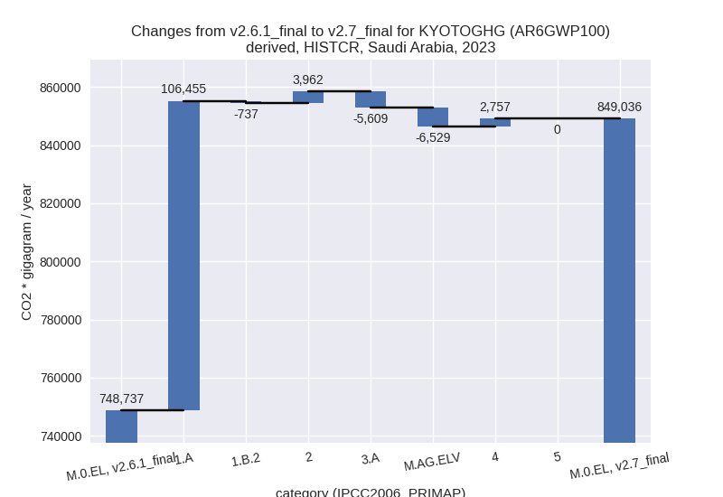
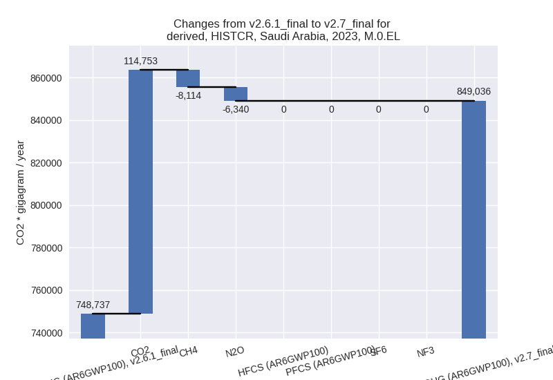
1990-2023
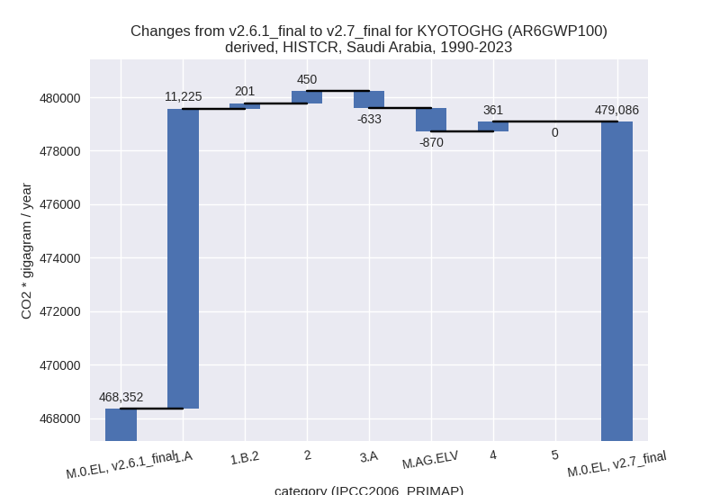
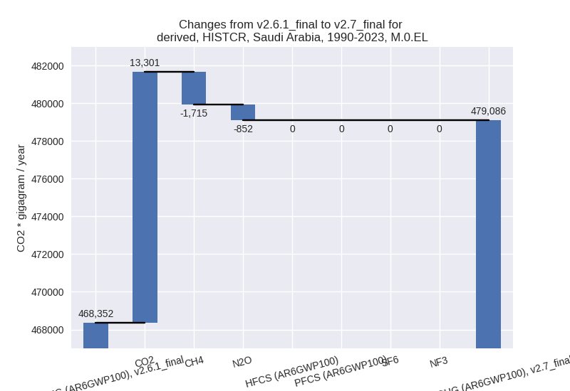
third party scenario
2023
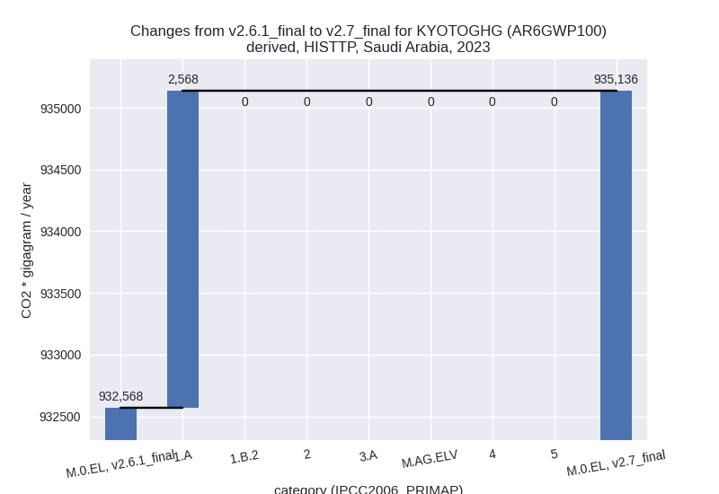
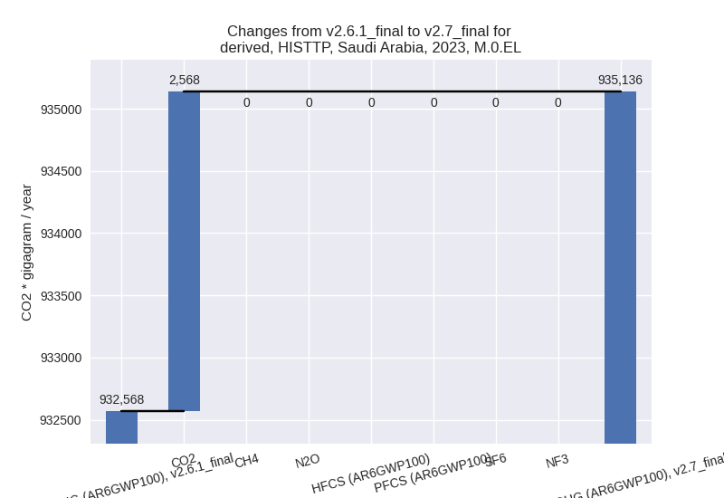
1990-2023
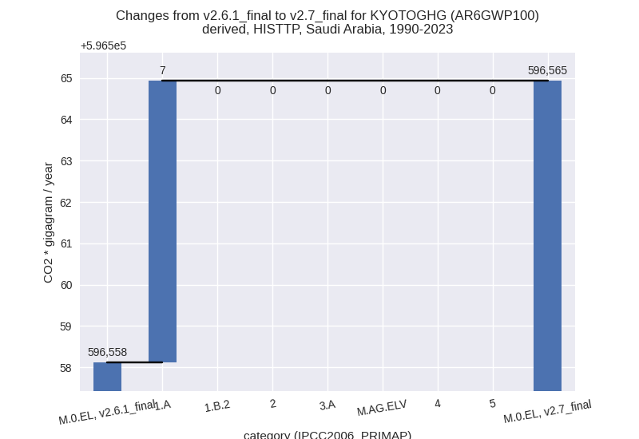
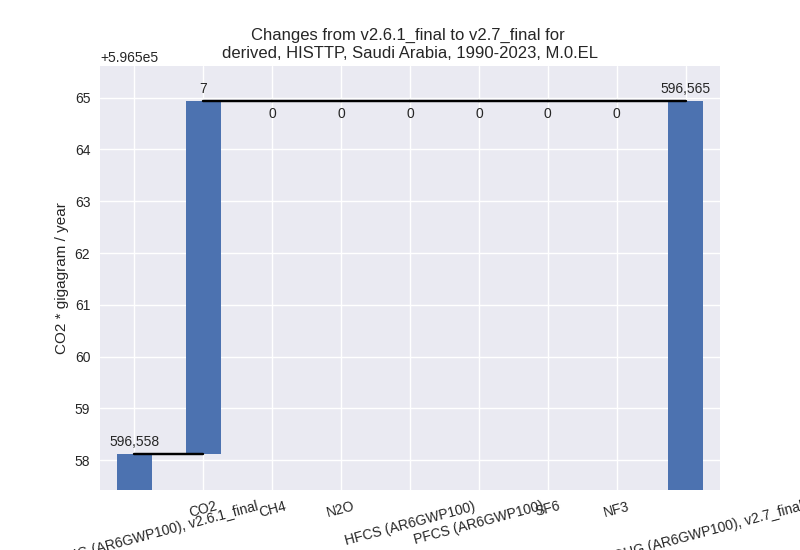
Detailed changes for the
scenarios:
country reported scenario
(HISTCR):
Most important changes
per time frame
For 2023 the following sector-gas combinations have
the highest absolute impact on national total KyotoGHG (AR6GWP100)
emissions in 2023 (top 5):
- 1: 1.A, CO2 with 106188.34 Gg CO2 / year (21.1%)
- 2: M.AG.ELV, N2O with -6432.38 Gg CO2 / year (-57.9%)
- 3: 1.B.2, CH4 with -5885.42 Gg CO2 / year (-43.7%)
- 4: 3.A, CH4 with -5406.78 Gg CO2 / year (-56.5%)
- 5: 1.B.2, CO2 with 5148.79 Gg CO2 / year (75.9%)
For 1990-2023 the following sector-gas combinations
have the highest absolute impact on national total KyotoGHG (AR6GWP100)
emissions in 1990-2023 (top 5):
- 1: 1.A, CO2 with 11188.11 Gg CO2 / year (3.3%)
- 2: 1.B.2, CO2 with 1751.04 Gg CO2 / year (32.0%)
- 3: 1.B.2, CH4 with -1550.53 Gg CO2 / year (-12.4%)
- 4: M.AG.ELV, N2O with -860.30 Gg CO2 / year (-12.7%)
- 5: 3.A, CH4 with -598.16 Gg CO2 / year (-18.4%)
Changes in the main sectors for aggregate KyotoGHG (AR6GWP100)
are
- 1: Total sectoral emissions in 2022 are 615006.36
Gg CO2 / year which is 74.6% of M.0.EL emissions. 2023 Emissions have
changed by 20.1% (105718.29 Gg CO2 /
year). 1990-2023 Emissions have changed by 3.2% (11425.89 Gg CO2 / year). For 2023
the changes per gas
are:
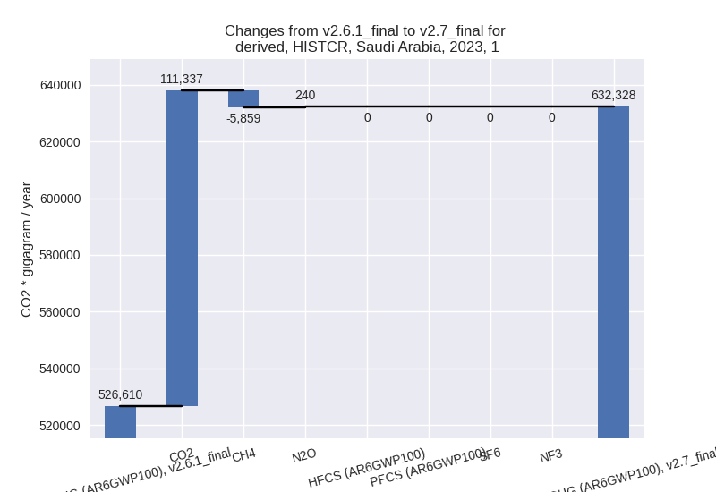
For 1990-2023 the changes per gas
are:
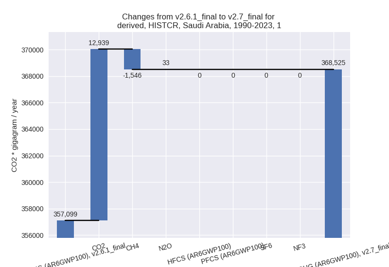
The changes come from the following subsectors:
- 1.A: Total sectoral emissions in 2022 are 597771.45
Gg CO2 / year which is 97.2% of category 1 emissions. 2023 Emissions
have changed by 21.0% (106454.93 Gg
CO2 / year). 1990-2023 Emissions have changed by 3.3% (11225.39 Gg CO2 / year). For 2023
the changes per gas
are:
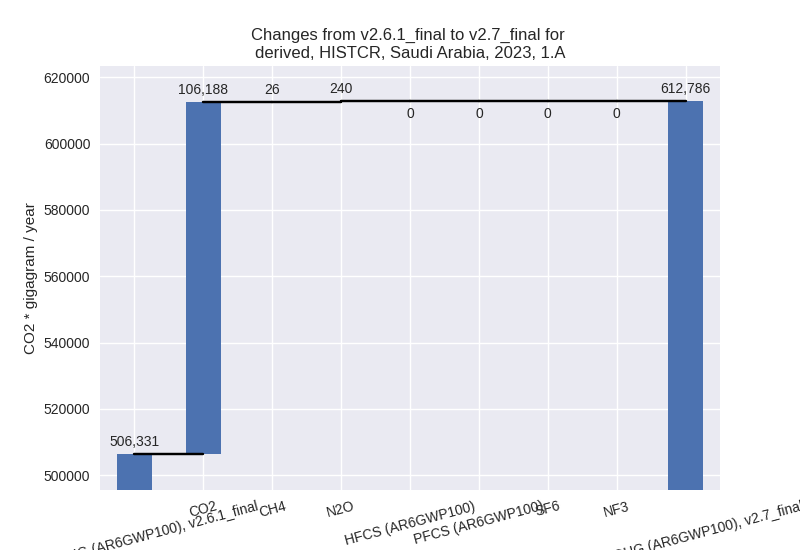
For 1990-2023 the changes per gas
are:
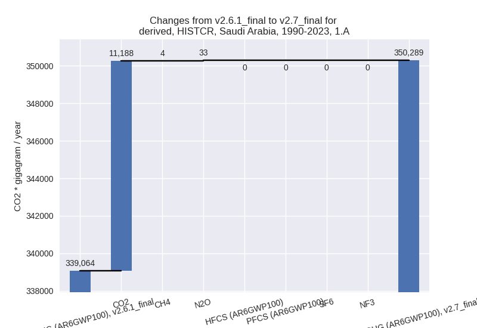
There is no subsector information available in PRIMAP-hist.
- 1.B.2: Total sectoral emissions in 2022 are
17234.92 Gg CO2 / year which is 2.8% of category 1 emissions. 2023
Emissions have changed by -3.6%
(-736.64 Gg CO2 / year). 1990-2023 Emissions have changed by 1.1% (200.50 Gg CO2 / year). For 2023 the
changes per gas
are:
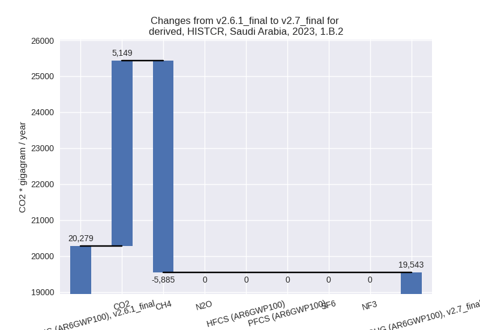
There is no subsector information available in PRIMAP-hist.
- 2: Total sectoral emissions in 2022 are 153643.37
Gg CO2 / year which is 18.6% of M.0.EL emissions. 2023 Emissions have
changed by 2.6% (3961.80 Gg CO2 /
year). 1990-2023 Emissions have changed by 0.7% (450.30 Gg CO2 / year). For 2023 the
changes per gas
are:
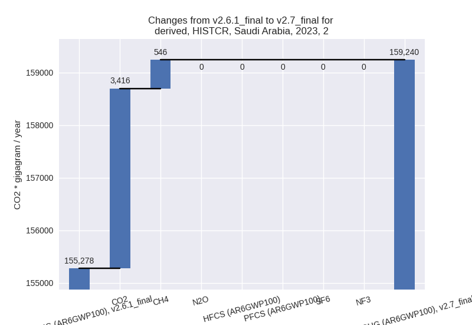
- M.AG: Total sectoral emissions in 2022 are 8719.77
Gg CO2 / year which is 1.1% of M.0.EL emissions. 2023 Emissions have
changed by -56.4% (-12138.15 Gg CO2
/ year). 1990-2023 Emissions have changed by -12.2% (-1503.07 Gg CO2 / year). For 2023
the changes per gas
are:
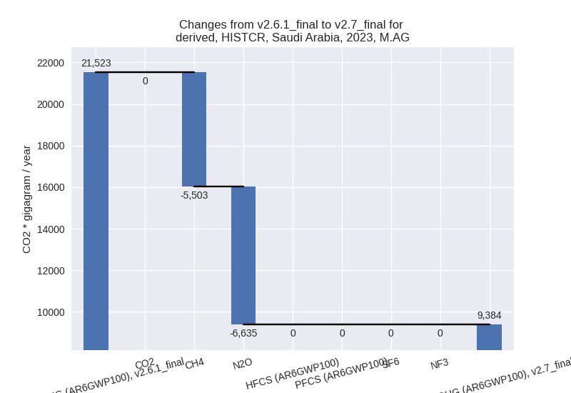
For 1990-2023 the changes per gas
are:
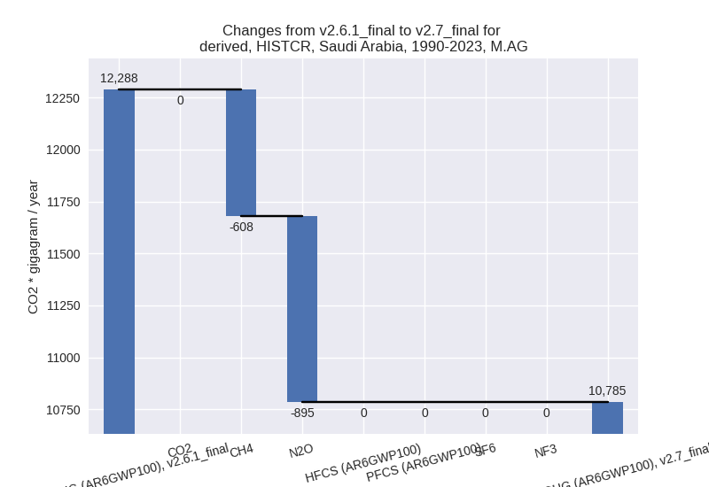
The changes come from the following subsectors:
- 3.A: Total sectoral emissions in 2022 are 4037.02
Gg CO2 / year which is 46.3% of category M.AG emissions. 2023 Emissions
have changed by -55.9% (-5609.36 Gg
CO2 / year). 1990-2023 Emissions have changed by -12.4% (-632.95 Gg CO2 / year). For 2023
the changes per gas
are:
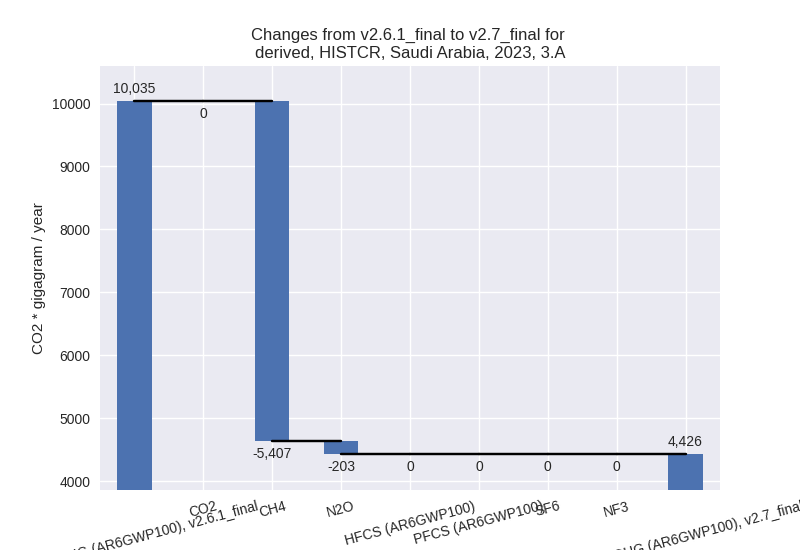
For 1990-2023 the changes per gas
are:
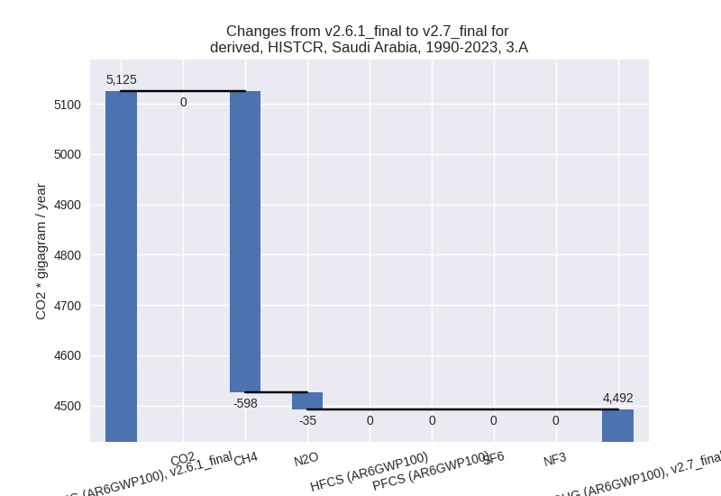
There is no subsector information available in PRIMAP-hist.
- M.AG.ELV: Total sectoral emissions in 2022 are
4682.75 Gg CO2 / year which is 53.7% of category M.AG emissions. 2023
Emissions have changed by -56.8%
(-6528.79 Gg CO2 / year). 1990-2023 Emissions have changed by -12.1% (-870.12 Gg CO2 / year). For 2023
the changes per gas
are:
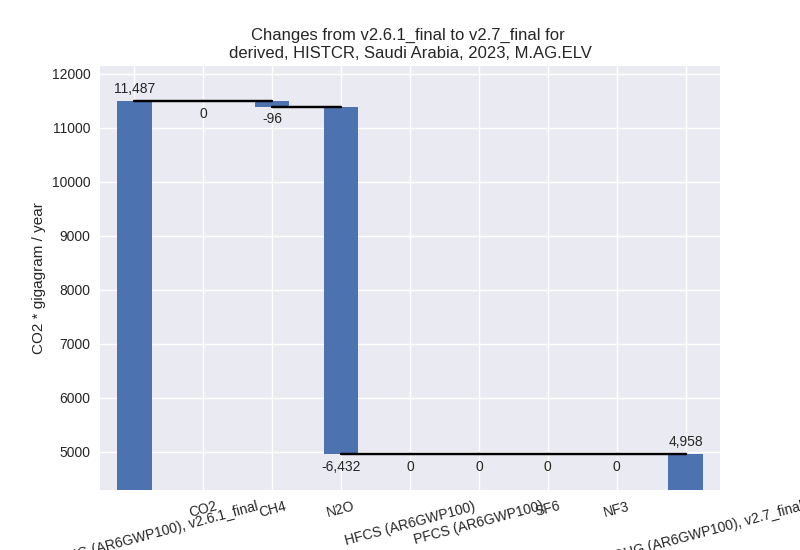
For 1990-2023 the changes per gas
are:
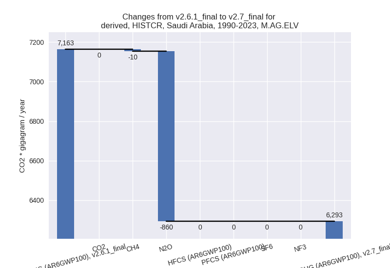
There is no subsector information available in PRIMAP-hist.
- 4: Total sectoral emissions in 2022 are 44939.41 Gg
CO2 / year which is 5.5% of M.0.EL emissions. 2023 Emissions have
changed by 6.4% (2757.31 Gg CO2 /
year). 1990-2023 Emissions have changed by 1.2% (361.43 Gg CO2 / year). For 2023 the
changes per gas
are:
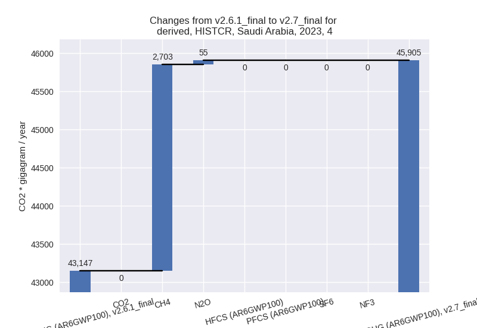
- 5: Total sectoral emissions in 2022 are 2126.46 Gg
CO2 / year which is 0.3% of M.0.EL emissions. 2023 Emissions have
changed by 0.0% (0.00 Gg CO2 /
year). 1990-2023 Emissions have changed by 0.0% (0.00 Gg CO2 / year).
third party scenario (HISTTP):
Most important changes
per time frame
For 2023 the following sector-gas combinations have
the highest absolute impact on national total KyotoGHG (AR6GWP100)
emissions in 2023 (top 5):
- 1: 1.A, CO2 with 2568.02 Gg CO2 / year (0.4%)
- 2: 1.A, CH4 with 0.00 Gg CO2 / year (0.0%)
- 3: 1.A, N2O with 0.00 Gg CO2 / year (0.0%)
- 4: 2, PFCS (AR6GWP100) with 0.00 Gg CO2 / year (0.0%)
- 5: M.AG.ELV, N2O with 0.00 Gg CO2 / year (0.0%)
For 1990-2023 the following sector-gas combinations
have the highest absolute impact on national total KyotoGHG (AR6GWP100)
emissions in 1990-2023 (top 5):
- 1: 1.A, CO2 with 6.81 Gg CO2 / year (0.0%)
- 2: 1.A, CH4 with 0.00 Gg CO2 / year (0.0%)
- 3: 1.A, N2O with 0.00 Gg CO2 / year (0.0%)
- 4: 2, PFCS (AR6GWP100) with 0.00 Gg CO2 / year (0.0%)
- 5: M.AG.ELV, N2O with 0.00 Gg CO2 / year (0.0%)
Changes in the main sectors for aggregate KyotoGHG (AR6GWP100)
are
- 1: Total sectoral emissions in 2022 are 713214.68
Gg CO2 / year which is 77.9% of M.0.EL emissions. 2023 Emissions have
changed by 0.4% (2568.02 Gg CO2 /
year). 1990-2023 Emissions have changed by 0.0% (6.81 Gg CO2 / year).
- 2: Total sectoral emissions in 2022 are 155763.16
Gg CO2 / year which is 17.0% of M.0.EL emissions. 2023 Emissions have
changed by 0.0% (0.00 Gg CO2 /
year). 1990-2023 Emissions have changed by 0.0% (0.00 Gg CO2 / year).
- M.AG: Total sectoral emissions in 2022 are 13209.60
Gg CO2 / year which is 1.4% of M.0.EL emissions. 2023 Emissions have
changed by 0.0% (0.00 Gg CO2 /
year). 1990-2023 Emissions have changed by 0.0% (0.00 Gg CO2 / year).
- 4: Total sectoral emissions in 2022 are 30840.65 Gg
CO2 / year which is 3.4% of M.0.EL emissions. 2023 Emissions have
changed by 0.0% (0.00 Gg CO2 /
year). 1990-2023 Emissions have changed by 0.0% (0.00 Gg CO2 / year).
- 5: Total sectoral emissions in 2022 are 2126.46 Gg
CO2 / year which is 0.2% of M.0.EL emissions. 2023 Emissions have
changed by 0.0% (0.00 Gg CO2 /
year). 1990-2023 Emissions have changed by 0.0% (0.00 Gg CO2 / year).